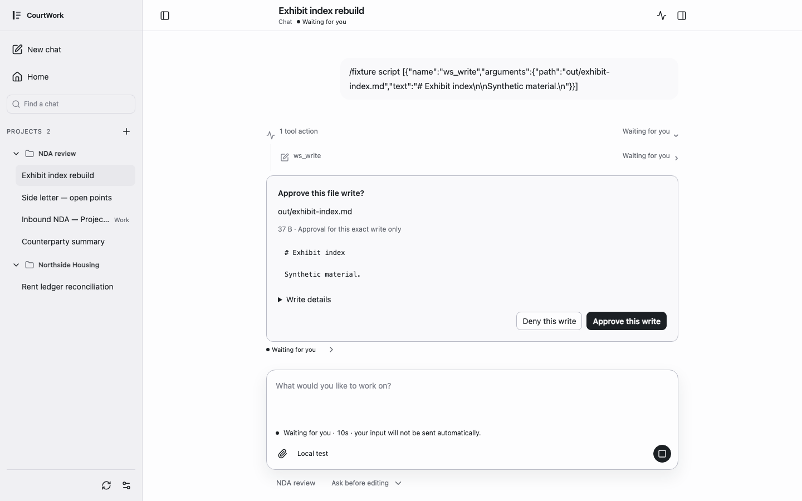
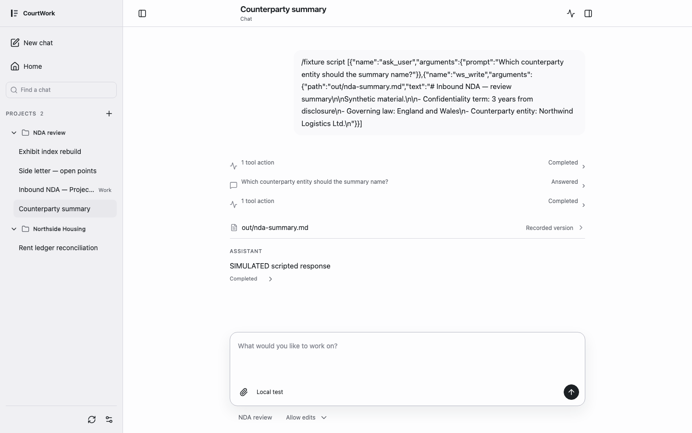
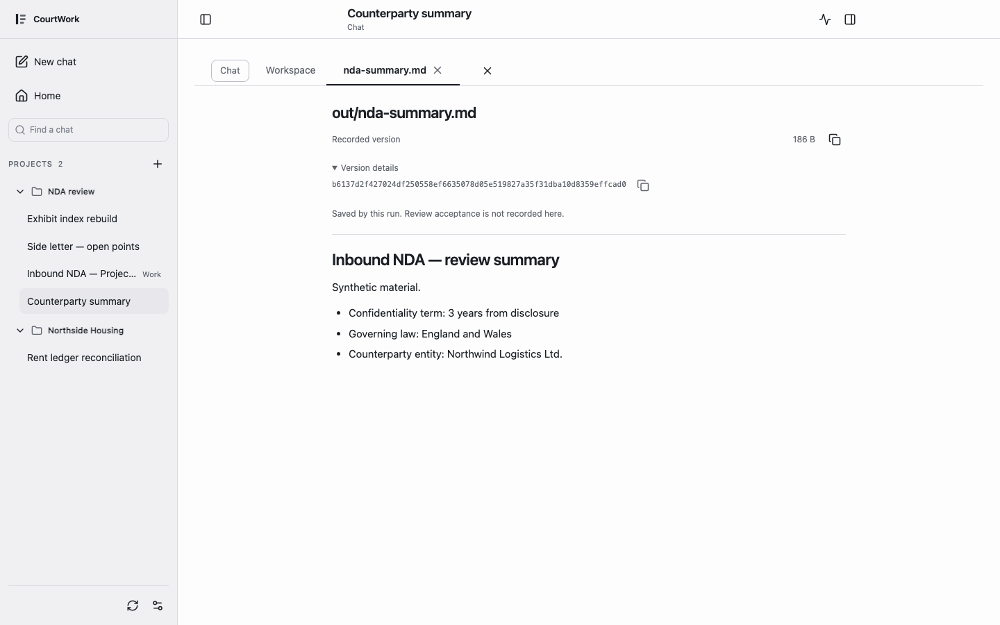
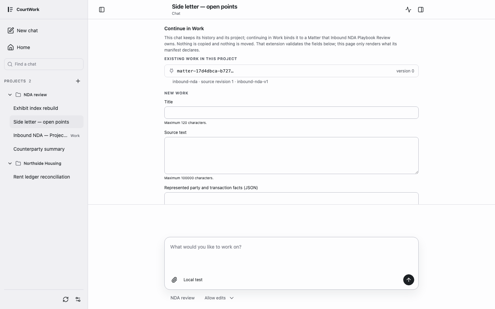

-
1. Home
写下要做的工作。选一个 Project，并决定文件如何被编辑：Ask before editing、Allow edits，或 Read only。
runs locally

-
2. Run
每一次工具调用在发生时显示，不藏在摘要后面。
verified with synthetic data

-
3. Approval
写入之前 Agent 先问。你看到确切的路径、大小与内容 hash，只批准这一次写入。
verified with synthetic data
-
4. Question
需要一个事实时 Agent 提问；回答随 Run 一起记录。回答不等于授权。
verified with synthetic data

-
5. File
打开这次 Run 产生的文件。它的身份是记录下来的字节，不是聊天里的一段文字。
verified with synthetic data

-
6. Stop · reconnect
取消 Run，关掉页面，再回来：Chat 显示最后一次确认的状态。
not recorded in this replay
-
7. Continue in Work
把这个 Chat 绑定到一个 Matter。历史与 Project 都保留；不复制，不迁移。
verified with synthetic data

-
8. Candidate → Decision
候选逐条附证据与来源。人接受、退回，或要求补证据；正式成果与候选分开。
verified with synthetic data